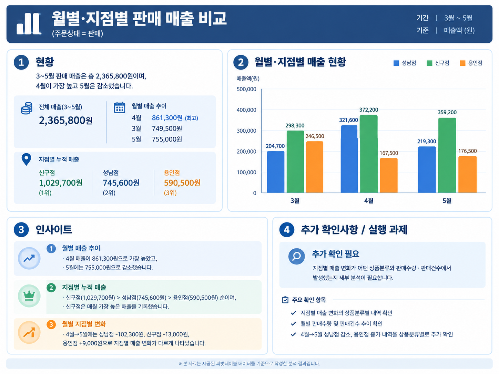

00오늘의 흐름
신구대학교 재학생 특강 · AI에게 묻고, Excel에서 실행하고, 결과를 검증하다
Table of Contents
| PART | 내용 | 시간 |
|---|---|---|
| 1 | AI로 데이터 문제 진단 | 20분 |
| 2 | AI 수식 생성·검증 | 40분 |
| 3 | 데이터 정제 및 구조 표준화 | 30분 |
| 4 | 매출 분석 & 피벗테이블 | 20분 |
| 5 | 시각화 & 요약 보고서 | 15분 |
📂실습자료
수업 시작 전에 실습 파일을 내려받아 열어 두세요.
두 파일 모두 시트 구성은 같습니다: 01_실습안내 · 02_매출원본 · 03_상품Master · 04_지점Master · 05_정제데이터 · 06_피벗분석 · 07_대시보드 · 08_AI보고서 · 09_함수테스트 · 10_확인필요
00OPENING · 오프닝
AI가 알려준다 → 내가 실행한다 → 내가 검증한다
이 데이터, 믿어도 될까요?
실습 파일 「02_매출원본」에 실제로 들어 있는 데이터입니다
질문 ① 세 값은 같은 지점일까요?
| 행 | 지점명 |
|---|---|
| 3행 | 성남점 |
| 12행 | 성남 점 |
| 28행 | 성남지점 |
질문 ② 이 매출액은 맞을까요? (141행)
| 수량 | 판매단가 | 매출액 |
|---|---|---|
| 3 | 4,500 | 14,000 |
오늘의 흐름과 최종 결과물
문제 발견 → AI에게 질문 → Excel에서 실행 → 결과 검증 → 분석 → 보고서
150분 뒤 여러분 손에 남는 4가지
| # | 결과물 | 시트 |
|---|---|---|
| 1 | 정제 데이터 | 05_정제데이터 |
| 2 | 피벗 분석 | 06_피벗분석 |
| 3 | 차트 | 07_대시보드 |
| 4 | 1페이지 보고서 | 08_AI보고서 |
역할을 나누면 헷갈리지 않습니다
실습 슬라이드 오른쪽 위의 배지를 보면 지금 누가 무엇을 하는지 알 수 있습니다
| 역할 | 하는 일 |
|---|---|
| AI | 후보를 찾고 / 방법·수식을 제안하고 / 초안을 쓴다 |
| 학생 | 선택하고, 적용하고 / 검증하고 / 최종 판단한다 |
| Excel | 실제로 계산한다 (모든 숫자의 근거) |
| 강사 | 기준을 제시하고 / 막힌 곳을 푼다 |
오늘 만날 함수 지도
외우지 않아도 됩니다 — 수식은 AI가 알려주고, 우리는 "이 함수가 무슨 일을 하는지"만 압니다
| 그룹 | 역할 | 함수 | 오늘 쓰는 곳 |
|---|---|---|---|
| 1 판정하기 | 맞는지 틀린지 가린다 | IF · COUNT · ISNUMBER · OR · NOT | 매출 검증 · 조건부 서식 |
| 2 찾아오기 | 기준표에서 정답을 가져온다 | XLOOKUP · COUNTIF | 상품분류 · 지점명 · 중복 |
| 3 정리하기 | 지저분한 글자를 고친다 | SUBSTITUTE · TRIM · TEXTJOIN · DATEVALUE · IFERROR | 공백 제거 · 날짜 변환 |
| 4 합계 내기 | 조건 맞는 것만 더한다 | SUMIFS · DATE | 3월 신구점 매출 |
실습 파일 살펴보기
AI_스마트엑셀_학생용_실습데이터.xlsx (위 실습자료에서 다운로드)
| 시트 | 용도 | 사용 시점 |
|---|---|---|
| 01_실습안내 | 미션 안내 | 시작 |
| 02_매출원본 | 원본 데이터 300행 | 진단 (수정 금지) |
| 03_상품Master | 상품 기준정보 10개 | 조회 |
| 04_지점Master | 지점 기준정보 3개 | 조회 |
| 05_정제데이터 | 작업·정제 공간 | PART 02~03 |
| 06_피벗분석 | 피벗테이블 | PART 04 |
| 07_대시보드 | 차트 | PART 05 |
| 08_AI보고서 | 요약 보고서 | PART 05 |
| 09_함수테스트 | 수식 연습 | PART 01~02 |
| 10_확인필요 | 분석 제외 행 기록 | PART 03 (강사 시연) |
시작 전 확인
- ☐ 실습 파일 열기
- ☐ ChatGPT 로그인
- ☐ 파일 업로드 버튼 확인
01AI로 데이터 문제 진단
미션 1 │ 분석하기 전에, 데이터부터 점검한다
| 상황 | 카페 3개 지점 3개월 매출 분석 담당자 |
| 목표 | AI가 찾은 문제를 Excel에서 직접 확인 |
| 시간 | 20분 |
1-1. 먼저 사람 눈으로 10행 점검하기
학생 09 시트 45~55행에서 문제 찾기 | AI 아직 사용하지 않음
| 주문일자 | 지점명 | 판매단가 | 매출액 |
|---|---|---|---|
| 2026-03-05 | 신구점 | 3000 | 6000 |
| 2026/03/08 | 신구 점 | 4000 | 4000 |
| 2026.03.12 | 성남점 | "4,500" | 9000 |
| 2026-03-15 | 성남지점 | 4800 | 4800 |
| 2026-04-07 | 용인점 | 4500 | "9,000" |
※ 블록 ④ 일부 발췌 — 전체 10행은 실습 파일에서 확인
- 이렇게 하세요「09_함수테스트」 블록 ④ — 찾은 문제를 G열에 적기
- 찾을 것날짜 형식 · 지점명 표기 / 숫자/텍스트 · 계산 오류
1-2. 좋은 프롬프트의 5요소
AI는 우리 파일을 모릅니다. 구조를 알려줄수록 정확해집니다.
| # | 요소 | 내용 |
|---|---|---|
| 1 | 역할 | "너는 데이터 분석 전문가야" |
| 2 | 대상 | 파일 · 시트 · 열 구조 |
| 3 | 관점 | 무엇을 찾을지 번호로 나열 |
| 4 | 출력 형식 | 표 형식, 열 이름 지정 |
| 5 | 제약 | "실제 데이터만, 추측하지 마" |
1-3. AI에게 데이터 진단 맡기기
너는 Excel 데이터 품질을 점검하는 데이터 분석 전문가야. 첨부한 파일의 「02_매출원본」 시트를 분석해줘. 열 구성: 주문일자, 지점코드, 지점명, 상품코드, 상품명, 수량, 판매단가, 매출액, 결제수단, 담당자, 주문상태, 비고 기준정보: 「03_상품Master」, 「04_지점Master」 다음 관점에서 문제를 찾아줘. 1. 빈 셀 2. 같은 의미인데 표기가 다른 값 3. 날짜 형식 불일치 4. 텍스트로 입력된 숫자 5. 완전히 같은 중복 행 6. 분석에 불필요한 행(소계, 메모) 7. 기준정보에 없는 코드 8. 수량×판매단가 ≠ 매출액인 행 표 형식: 문제 유형 | 해당 열 | Excel 행 번호 | 예시 값 | 처리 방법 실제 데이터에서 확인되는 것만 쓰고 추측하지 마.
| 학생 | AI |
|---|---|
| 1. 파일 업로드 | 1. 파일 읽기 |
| 2. 프롬프트 붙여넣기 | 2. 문제 유형 분류 |
| 3. 전송 | 3. 표로 정리 |
1-4. AI 답변은 "정답 후보"입니다
| ! | 이유 |
|---|---|
| 행 번호가 1~2칸 어긋날 수 있다 | AI가 제목 행을 빼고 세는 경우가 있음 |
| 놓치거나, 없는 문제를 말할 수 있다 | "전부 찾았다"고 확신하면 안 됨 |
| 텍스트 날짜를 "문제없음"이라 할 수 있다 | AI가 읽으면서 자동 변환하는 경우 |
1-5. Excel에서 검증하기: 필터 목록 활용
지점명 ▼ (예시 화면)
(모두 선택) 3월 소계 4월 소계 메모 성남 점 성남점 성남지점 신구 점 신구점 용인 점 용인점 용인지점 (필드 값 없음)
- 데이터 탭 → 필터(Ctrl + Shift + L)
- 지점명 ▼ 클릭
- 목록에서 이상한 값 찾기
- 상품명 · 상품코드 · 주문상태도 확인
1-6. 미션 1 완료: AI 발견 vs 내 확인
| 문제 유형 | AI가 찾았나 | Excel에서 확인 | 건수 |
|---|---|---|---|
| 소계/메모 행 | |||
| 중복 행 | |||
| 지점명 표기 | |||
| 상품명 표기 | |||
| 상품코드 오류 | |||
| 날짜 형식 | |||
| 텍스트 숫자 | |||
| 매출액 불일치 | |||
| 빈 셀 |
함께 확인
- AI가 찾은 문제 중 실제로 있는 것은?
- AI가 놓친 문제는?
- 행 번호가 맞았나요?
1-7. 미션 1 완료: AI 발견 vs 내 확인
| 문제 유형 | 건수 | 원본 행 번호 [실습파일 확인] |
|---|---|---|
| 소계/메모 행 | 3 | 74, 165, 241 |
| 중복 행 | 5쌍(10행) | 44·45, 109·110, 177·178, 242·243, 286·287 |
| 지점명 표기 | 12 + 빈칸 1 | 빈칸 71 |
| 상품명 표기 | 공백 8 + 빈칸 1 | 16, 35, 63, 84, 107, 151, 207, 289 / 빈칸 54 |
| 상품코드 오류 | P013 5 + 빈칸 1 | 89, 126, 202, 256, 278 / 빈칸 181 |
| 날짜 형식 | 텍스트 10 + 빈칸 1 | 24, 48, 69, 87, 122, 159, 183, 211, 252, 296 / 빈칸 118 |
| 텍스트 숫자 | 8 | 수량 31·57·132·263, 단가 82·170, 매출액 103·219 |
| 매출액 불일치 | 5 | 52, 141, 188, 229, 271 |
| 기타 빈 셀 | 6 | 수량 8, 단가 96, 매출액 145, 결제수단 37, 담당자 21, 주문상태 224 |
02AI 수식 생성·검증
미션 2 │ 수식으로 문제를 찾아내자
| 핵심 | 수식 복사가 아니라 문제 찾기 |
| 방식 | 09 테스트 → 05 실전 적용 |
| 시간 | 40분 |
2-1. 작업 준비: 원본은 그대로, 복사본에서 작업
- 02_매출원본 전체 선택Ctrl+A → Ctrl+C
- 05_정제데이터 A1 클릭Ctrl+V
- M1~Q1에 도우미 열 제목 입력
| 05 시트 도우미 열 | M | N | O | P | Q |
|---|---|---|---|---|---|
| 제목 | 상품분류 | 매출검증 | 중복키 | 중복여부 | 날짜변환 |
2-2. 테스트 먼저, 실전은 나중에
AI에게 수식 요청 → 09 테스트 데이터(10행) → 예상 결과와 비교 → 통과하면 05(300행)에 적용
틀리면? → AI에게 다시 질문
| 왜 테스트부터 할까요? | |
|---|---|
| 10행은 눈으로 검산 가능 | 예상 결과가 미리 적혀 있어 바로 비교할 수 있다 |
| 300행은 눈으로 확인 불가 | 틀린 수식을 그대로 쓰면 틀린 숫자가 보고서까지 간다 |
2-3. 함수 지도: 어디에서 무엇을 쓰나
오프닝에서 본 지도의 상세판 — 09에서 먼저 테스트하고, 05의 각 열을 채웁니다
05_정제데이터 — 채우는 열
| 열 | 내용 | 함수 | 참고 |
|---|---|---|---|
| M | 상품분류 | XLOOKUP | 슬라이드 26 |
| N | 매출검증 | IF + COUNT | 슬라이드 22~23 |
| O | 중복키 | TEXTJOIN | 슬라이드 28 |
| P | 중복여부 | IF + COUNTIF | 슬라이드 28 |
| Q | 날짜변환 | IFERROR · DATEVALUE · SUBSTITUTE | 슬라이드 39 |
| R~U | 표준화(임시) | XLOOKUP · COUNTIF · SUBSTITUTE | 슬라이드 40~41 |
| W2 | 참고 합계 | SUMIFS + DATE | 슬라이드 30 |
09 테스트 먼저 — IF → D6 (21) · XLOOKUP → B20 (24) · SUMIFS → M33 (29)
2-4. 수식 요청 프롬프트 공식
Excel 버전 + 시트·열 위치 + 원하는 결과 + 예외 처리 + 설명 요청
나는 [Excel 2021]을 사용해. [「05_정제데이터」의 상품코드는 D열]이고 … [상품분류를 가져오는] 수식을 만들어줘. [못 찾으면 "확인필요"]라고 표시해줘. [수식 각 부분의 역할]도 설명해줘.
이 5개가 빠지면 AI가 없는 함수를 주거나, 열을 틀리게 씁니다
2-5. [09-①] IF 테스트: 매출액이 맞을까?
학생 빈칸을 채워 AI에게 요청 → AI 수식 작성·설명 → Excel D6~D15 계산
나는 Excel [ ] 버전을 사용해. 「09_함수테스트」에서 수량은 A열, 판매단가는 [ ]열, 매출액은 [ ]열이야. 수량×판매단가가 매출액과 같으면 "[ ]", 다르면 "[ ]"라고 D열에 표시하는 수식을 만들어줘. 수식 설명도 해줘.
- D6에 수식 입력
- 채우기 핸들 더블클릭
- E열 예상 결과와 비교
- 검토필요가 3건이면 통과
수식 예시
=IF(A6*B6=C6,"정상","검토필요")
2-6. 05에 적용했더니… 함정 발견!
=IF(F2*G2=H2,"정상","검토필요")
← 05 시트 N2에 입력 후 아래로 채우기
| 행 | 상황 | 결과 |
|---|---|---|
| 74행 "3월 소계" | 빈칸 × 빈칸 = 빈칸 | → "정상" |
| 103행 매출액 '13500' (텍스트) | 계산은 맞는데 | → "검토필요" |
2-7. AI에게 조건을 추가해 다시 요청
(앞의 요청에 이어서) 빈칸이나 텍스트로 된 숫자가 있으면 "값확인"으로 표시해줘.
개선 수식
=IF(COUNT(F2:H2)<3,"값확인",IF(F2*G2=H2,"정상","검토필요"))
나는 Excel 2021을 사용해. 「05_정제데이터」 시트에서 수량은 F열, 판매단가는 G열, 매출액은 H열이고,
데이터는 2행부터 있어. N2에 넣고 아래로 채울 수식 1개를 만들어줘.
판정 조건:
1. F2:H2 세 칸 중 숫자로 된 칸이 3개가 아니면 "값확인" (빈칸이나 텍스트로 입력된 숫자는 숫자로 세지 않음)
2. 세 칸이 모두 숫자이고 F×G가 H와 같으면 "정상"
3. 세 칸이 모두 숫자이고 F×G가 H와 다르면 "검토필요"
제약: - COUNT 함수로 숫자 칸의 개수를 세는 방식으로 만들어줘. - 텍스트 숫자를 숫자로 변환하지 마., - IF는 2개, 수식은 한 줄로 최대한 짧게.
- 수식 1개와 각 부분의 역할만 설명해줘.
| 결과 | 건수 | 행 |
|---|---|---|
| 검토필요 | 5건 | 52 · 141 · 188 · 229 · 271행 |
| 값확인 | 14건 | 소계·메모 3(74·165·241) + 빈칸 3(8·96·145) + 텍스트 숫자 8(31·57·82·103·132·170·219·263) |
2-8. [09-②] XLOOKUP 테스트: 상품분류 가져오기
학생 빈칸을 채워 AI에게 요청 → AI 수식 작성·설명 → Excel B20~B29 계산
나는 Excel [ ]을 사용해. 「09_함수테스트」의 상품코드는 A열, 「03_상품Master」의 상품코드는 A열, 상품분류는 [ ]열이야. XLOOKUP으로 B20에 상품분류를 가져와줘. 코드를 못 찾으면 "확인필요"라고 표시해줘. 수식 각 부분의 역할도 설명해줘.
나는 Excel 2021을 사용해. 「09_함수테스트」의 상품코드는 A열이고, 「03_상품Master」의 상품코드는 A열, 상품분류는 C열이야. B20에 상품분류를 가져오려면 어떤 함수를 써야하니?
확인 포인트
| 상품코드 | 예상 결과 |
|---|---|
| P001 | 커피 |
| P005 | 논커피 |
| P013 | 확인필요 |
| P011 | 확인필요 |
Master에 없는 코드(P013·P011)가 "확인필요"로 나오면 통과
수식 예시
=XLOOKUP(A20,'03_상품Master'!$A$2:$A$11,'03_상품Master'!$C$2:$C$11,"확인필요")
2-9. XLOOKUP 수식 해부
=XLOOKUP( ① , ② , ③ , ④ )
| 위치 | 의미 | 예 |
|---|---|---|
| ① | 찾을 값 | A20 |
| ② | 찾을 범위 | '03_상품Master'!$A$2:$A$11 |
| ③ | 가져올 범위 | '03_상품Master'!$C$2:$C$11 |
| ④ | 못 찾을 때 | "확인필요" |
- $ 절대참조아래로 채울 때 Master 범위가 밀리지 않게 고정
- 작은따옴표 ' '시트 이름이 숫자로 시작하면 필요 → 빠지면 오류
- VLOOKUP과 비교열 번호를 셀 필요 없음, 왼쪽 방향 조회 가능
2-10. 05에 적용: 수식이 오류 데이터를 찾아준다
M2
=XLOOKUP(D2,'03_상품Master'!$A$2:$A$11,'03_상품Master'!$C$2:$C$11,"확인필요")
M열 필터에서 확인필요만 골라 보면
| 건수 | 내용 |
|---|---|
| 5건 | 상품코드 P013 (Master에 없는 코드) |
| 1건 | 상품코드 빈칸 (181행) |
| 3건 | 소계 · 메모 행 (분석 대상 아님) |
2-11. 오류 코드가 나오면? AI에게 교정 요청
| 오류 코드 | 흔한 원인 |
|---|---|
| #N/A | 찾는 값이 없음 |
| #VALUE! | 텍스트를 숫자로 계산 |
| #NAME? | 오타 / 버전에 없는 함수 |
| #REF! | 참조 범위가 사라짐 |
Excel 2021에서 이 수식을 입력했더니 [오류 코드]가 나왔어. 수식: [붙여넣기] 해당 셀 값: [값] 원인과 수정한 수식을 알려줘.
[나중에 넣을 것] 오류 화면 캡처 2장 — ① G26에서 나온 #N/A 화면 ② 연습 중 겪은 #REF! 화면 (Ctrl+V로 수식째 붙여넣은 경우)
시연 순서 — 「확인필요」를 뺀 수식을 G26에 입력 → #N/A 확인 → 교정 프롬프트로 AI에게 질문
=XLOOKUP(A26,'03_상품Master'!$A$2:$A$11,'03_상품Master'!$C$2:$C$11)
2-12. 텍스트 정리 · 중복 찾기
텍스트 정리: TRIM의 한계 (강사 시연)
| 수식 | "카페 라떼" 결과 |
|---|---|
| =TRIM(E2) | 카페 라떼 (실패) |
| =SUBSTITUTE(E2," ","") | 카페라떼 (성공) |
중복 찾기: 한 행을 문자열 하나로 (학생 실습)
O2
=TEXTJOIN("|",FALSE,A2:L2)
P2
=IF(COUNTIF($O$2:$O$301,O2)>1,"중복","")
- O2:P2 함께 선택 → 301행까지 채우기
- 결과: 중복 5쌍 (10행)
- 두 행 모두 "중복" 표시 → 지울 것은 한 행뿐
2-13. [09-③] SUMIFS 테스트: 오류 없이 틀린 값
M33~M35에 조건 칸(J~L)을 참조하는 SUMIFS → N열 예상 결과와 비교 → O열에 표를 보고 직접 계산
M33
=SUMIFS($D$33:$D$42,$A$33:$A$42,J33,$B$33:$B$42,K33,$C$33:$C$42,L33)
M36 ← 월 조건 빼고 따로 입력
=SUMIFS($D$33:$D$42,$B$33:$B$42,K36,$C$33:$C$42,L36)
| 문제 | SUMIFS 결과 | 직접 계산 | 차이 원인 |
|---|---|---|---|
| Q1 3월 신구점 판매 | 14,000 | 21,000 | "신구 점" 7,000 누락 |
| Q2 4월 성남점 판매 | 9,000 | 9,000 | 일치 (취소 3,000은 정상 제외) |
| Q3 5월 용인점 판매 | 12,000 | 17,000 | "용인 점" 5,000 누락 |
| Q4 신구점 판매 전체 | 14,000 | 29,000 | "신구 점" + 텍스트 "8,000" 누락 |
2-14. 05에 적용: 3월 신구점 판매 매출
=SUMIFS(H:H,C:C,"신구점",K:K,"판매",A:A,">="&DATE(2026,3,1),A:A,"<"&DATE(2026,4,1))
285,300원 — 정제 전 결과 (참고값)
이 숫자, 보고서에 써도 될까요?
- 텍스트 날짜 행 → 빠짐
- "신구 점" 표기 행 → 빠짐
- 텍스트 매출액 행 → 빠짐
- 잘못 입력된 매출액 → 그대로 포함
2-15. AI 수식 검증 3단계
- 실행되는가?오류 코드가 나오지 않는다
- 논리가 맞는가?소계 행이 "정상"으로 나온 사례를 기억하세요
- 교차검증했는가?필터 + 상태 표시줄 합계로 다른 방법과 비교
2-16. 미션 2 완료 체크
- ☐ IF 매출 검증 (개선판)
- ☐ XLOOKUP 상품분류
- ☐ SUMIFS 조건 합계
- ☐ 09 테스트 → 05 실전 적용
- ☐ 교차검증
03데이터 정제 및 구조 표준화
미션 3 │ 분석하기 전에 데이터를 정리하자
| 원칙 | 원본 보존 · 기준 기록 |
| 결과 | 05_정제데이터 완성 |
| 시간 | 30분 |
3-1. 왜 정제가 먼저일까?
| 문제 | SUMIFS | 실제 |
|---|---|---|
| 3월 신구점 | 14,000 | 21,000 |
| 4월 성남점 | 9,000 | 9,000 |
| 5월 용인점 | 12,000 | 17,000 |
| 신구점 전체 | 14,000 | 29,000 |
PART 03이 끝나면 W2가 저절로 바뀌는 것을 확인합니다
표기 통일 · 숫자 변환 · 불필요한 행 제거가 끝나야 분석 결과를 믿을 수 있습니다
3-2. AI에게 정제 순서와 기준 묻기
미션1에서 확인한 문제 목록은 다음과 같아: [미션 1 완료 표 붙여넣기] Excel 2021에서 정제하려고 해. ① 처리 순서 ② 문제별 처리 기준 ③ Excel에서 하는 방법 을 표로 알려줘. 원본은 수정하지 않는다는 전제야. 목록에 없는 문제는 추측하지 마.
| AI | 학생 |
|---|---|
| 순서와 기준을 제안한다 | 무엇을 채택할지 결정한다 |
3-3. 정제 기준 결정표
| 문제 | 권장 기준 | 채택 |
|---|---|---|
| 소계/메모 행 | 삭제 | |
| 완전 중복 | 1행만 남김 | |
| 지점명 표기 | 지점코드 → 04_지점Master | |
| 상품코드 P013·빈칸 | 상품명으로 역조회해 복구 | |
| 상품명 표기·빈칸 | 상품코드 → 03_상품Master | |
| 텍스트 숫자·날짜 | 숫자·날짜로 변환 | |
| 판매단가 빈칸 | Master 정상판매가 | |
| 매출액 | 수량 × 판매단가로 재계산 | |
| 수량·날짜·상태 빈칸 | "확인필요" 표시 후 분석 제외 | |
| 취소 건 | 삭제하지 않고 피벗에서 제외 |
토론해 봅시다
- ① P013 행은 코드와 상품명 중 무엇을 믿을까?
- ② 매출액 불일치는 수량이 틀린 걸까, 매출액이 틀린 걸까?
3-4. 정제 ①: 불필요한 행 → 중복 제거
순서가 중요합니다 — 소계·메모 행을 먼저 지우고 중복을 제거합니다
- 불필요한 행 삭제L열 비고 열 필터 → "분석 제외" → 보이는 3행 (74·165·241) 선택 → 행 삭제 → 필터 해제 · 결과: 3행 삭제
- 중복 제거데이터 탭 → 중복된 항목 제거 → A~L열만 체크 (도우미 열 제외) → 확인 메시지 확인 · 결과: 5개 제거
3-5. 정제 ②: 숫자 · 날짜 형식 통일
텍스트 숫자
- 셀 왼쪽 위 초록 삼각형 확인
- 경고 아이콘 클릭
- 숫자로 변환
텍스트 날짜 — Q2
=IFERROR(IF(ISNUMBER(A2),A2,DATEVALUE(SUBSTITUTE(A2,".","-"))),"확인필요")
"2026.05.08"의 점(.)을 하이픈(-)으로 바꾼 뒤 날짜로 변환
3-6. 정제 ③: 명칭 · 코드 표준화 + 매출액 재계산
1. 지점명 (R열 → C열)
=XLOOKUP(B2,'04_지점Master'!$A$2:$A$4,'04_지점Master'!$B$2:$B$4,"확인필요")
"이 행의 지점코드 (B2)를 Master코드 목록에서 찾아, 같은 줄의 표준 지점명을 가져와라"
2. 상품코드 (S열 → D열)
=IF(COUNTIF('03_상품Master'!$A$2:$A$11,D2)>0,D2,
XLOOKUP(SUBSTITUTE(E2," ",""),'03_상품Master'!$B$2:$B$11,'03_상품Master'!$A$2:$A$11,"확인필요"))
"이 코드가 Master에 있나?(COUNTIF>0) 있으면 그대로, 없으면(P013/빈칸) 상품명에서 공백을 빼고, 그 이름으로 코드를 거꾸로 찾아라"
3. 상품명 (T열 → E열) — 반드시 ② 다음에
=XLOOKUP(D2,'03_상품Master'!$A$2:$A$11,'03_상품Master'!$B$2:$B$11,"확인필요")
작업 방식: 빈 열에서 수식으로 만들기 → 값으로 붙여넣기 → 원래 열 교체
4. 판매단가 빈칸 채우기
G열 필터 → "(필드 값 없음)" → 1행(05 94행, 바닐라라떼 P003) → 4500 직접 입력 (Master 정상판매가) → 필터 해제
5. 매출액 재계산 (U열 → H열) (=F2*G2) : 수량이나 단가가 빈칸인 행은 원래 매출액을 그대로 두고, 나머지만 재계산
=IF(COUNT(F2:G2)<2,H2,F2*G2)
6. 정리: R~U열 선택 → Delete 키(내용만 지우기). 열 삭제는 하지 않음 (W2 위치 유지)
3-7. 조건부 서식으로 남은 문제 강조
- A2:L293 범위 선택
- 홈 → 조건부 서식 → 새 규칙
- "수식을 사용하여 서식을 지정할 셀 결정"
- 수식 입력 → 서식 → 연한 빨강 채우기
=OR($N2<>"정상",NOT(ISNUMBER($A2)),$K2="")
N열이 정상이 아니거나, 또는 날짜가 숫자가 아니거나, 또는 주문상태가 빈칸이면 칠합니다 · 열 문자 앞에만 $ → 행 전체가 칠해짐
결과 예시 — 빨간 행 3개
| 원본 행 | 05 행 | 남은 문제 |
|---|---|---|
| 8행 | 8행 | 수량 빈칸 |
| 118행 | 115행 | 주문일자 빈칸 |
| 224행 | 219행 | 주문상태 빈칸 |
3-8. 반복 작업이라면? Power Query
| 구분 | 작업 | 처리 |
|---|---|---|
| 지금 (오늘 실습 방식) | 한 번 하는 작업 | 수식 · 기능으로 처리 |
| 다음 단계 | 매달 반복되는 작업 | Power Query로 자동화 — "적용된 단계"가 기록되어 새로 고침만 하면 끝 |
시연 순서
- 데이터 → 테이블/범위에서
- 공백 제거 · 형식 변경
- "적용된 단계" 확인
3-9. 빼기 전에 기록하기: 확인필요 목록
- 05 시트 → 색 기준 필터 → 연한 빨강(3행만 보임)
- A~L 범위만 선택 → Ctrl+C
- 「10_확인필요」 A5 클릭 → Ctrl+V
- M열에 제외 사유 적기→ 05로 돌아와 PART 04에서 3행 삭제
「10_확인필요」 시트 결과
| 원본 행 | 지점 | 상품 | 빠진 값 | 제외 사유 |
|---|---|---|---|---|
| 8행 | 성남점 | 아메리카노 | 수량 | 수량 빈칸 |
| 118행 | 신구점 | 아메리카노 | 주문일자 | 주문일자 빈칸 |
| 224행 | 성남점 | 바닐라라떼 | 주문상태 | 주문상태 빈칸 |
원본은 「02_매출원본」에 그대로 있습니다 → 이 목록을 담당자에게 보내 확인받고, 답이 오면 고쳐서 다시 분석에 넣습니다
3-10. 정제 전 → 정제 후
| 지표 | 정제 전 → 정제 후 |
|---|---|
| 지점명 고유값 (빈칸 제외) | 11종 → 3종 |
| 3월 신구점 판매 SUMIFS (원) | 285,300 → 298,300 |
| 분석 대상 행 (확인필요 3행 제외) | 300 → 289행 |
미션 3 체크
- ☐ 원본 보존
- ☐ 정제 기준표 작성
- ☐ 형식 통일
- ☐ 명칭·코드 표준화
- ☐ 남은 문제 표시
04매출 분석 & 피벗테이블
미션 4 │ 정리된 데이터로 매출을 분석하자
| 질문 | 지점별 · 월별 · 상품분류별 매출은? |
| 결과 | 06_피벗분석 |
| 시간 | 20분 |
4-1. 분석 준비: 표로 변환
- 확인필요 3행 처리(삭제 또는 표시) — 마지막 행 290(데이터 289행) 확인
- 데이터 안 아무 셀 클릭
- Ctrl + T
- "머리글 포함" 체크 → 확인
| 왜 표로 만들까요? | 확인하기 |
|---|---|
| 데이터가 늘어나도 피벗 범위가 자동으로 확장됩니다 | 표 디자인 탭이 나타나면 성공 |
| 필터·서식이 자동 적용됩니다 | 표 이름을 "매출"로 바꿔 두면 편리 |
행 : 줄세울기준, 열: 칸 나눌 기준, 값: 더할 숫자, 필터: 빼고 볼것
4-2. AI에게 피벗 구조 묻기
나는 [월별·지점별 판매 매출 비교 ]를 알고 싶어. 데이터 필드는 [주문일자, 지점명, 상품분류, 주문상태, 매출액 ]이야. Excel 2021 피벗테이블의 ① 행 ② 열 ③ 값 ④ 필터 구성과 그렇게 구성하는 이유를 알려줘.
| 채울 내용 힌트 | |
|---|---|
| 목적 | 월별·지점별 매출 비교 |
| 필드 | 주문일자, 지점명, 상품분류, 주문상태, 매출액 … |
학생 직접 프롬프트 작성·전송
4-3. 피벗테이블 만들기
피벗 필드 배치
| 영역 | 필드 |
|---|---|
| 필터 | 주문상태 = 판매 |
| 열 | 주문일자 (월) |
| 행 | 지점명 |
| 값 | 합계 : 매출액 |
만드는 순서
- 표 안 클릭 → 삽입 → 피벗 테이블표/범위: 매출
- 기존 워크시트 → 06_피벗분석 A3
- 배치필터=주문상태(판매만) / 열=주문일자 / 행=지점명 / 값=합계: 매출액
- 날짜가 일 단위로 펼쳐지면날짜 셀 우클릭 → 그룹 → "월"만 선택 (일 해제) → 확인
- 값 우클릭 → 값 필드 설정 → 표시 형식 →숫자, 1000 단위 구분
"그룹으로 묶을 수 없습니다" 메시지 → 텍스트 날짜가 남은 것 → 05 A열 확인 후 새로 고침(Alt+F5)
4-4. 지표 확장: 합계 · 평균 · 비율
| 지표 | 설정 | 알 수 있는 것 |
|---|---|---|
| 평균 | 값 필드 설정 → 요약 기준 "평균" | 1건당 평균 매출 |
| 비율 | 값 표시 형식 → "총합계 비율" | 지점별 매출 비중 |
| 다차원 | 행에 상품분류 추가 | 지점 × 분류 교차 분석 |
4-5. AI 분석: 사실 / 해석 / 추측 구분하기
이 피벗 결과를 ① 객관적 현황 ② 데이터에서 확인되는 특징 ③ 추가 확인 사항으로 정리해줘. 데이터에 없는 원인은 쓰지 마. [피벗 수치 붙여넣기]
| AI가 쓴 문장 | 분류 | 근거 |
|---|---|---|
| 신구점 매출이 가장 높다 | 사실 | 피벗에서 확인 |
| 성남점은 4월에 매출이 크게 늘었다 | 사실 | 피벗에서 확인 |
| 4월 이벤트 때문에 늘었다 | 추측 | 데이터에 없음 |
[ ] ChatGPT 실제 답변 — https://chatgpt.com/s/t_6ac30e5262a4819191b11bfb51b6b5cd
4-6. 미션 4 완료: 결과 확인
2,365,800원 — 판매 매출 합계 (269건)
| 지점 | 합계 (원) |
|---|---|
| 신구점 | 1,029,700 |
| 성남점 | 745,600 |
| 용인점 | 590,500 |
※ 권장 정제 기준 적용 값입니다. 정제 기준이 다르면 값이 달라지는 것이 정상입니다.
05데이터 시각화 & 요약 보고서
미션 5 │ 숫자를 보고서로 바꾸자
| 흐름 | 데이터 → 분석 → 차트 → 보고서 |
| 결과 | 07_대시보드 · 08_AI보고서 |
| 시간 | 15분 |
5-1. AI에게 차트 추천받기
현재 피벗테이블은 월별·지점별 매출을 비교한 데이터야. 이 데이터를 시각화하려고 해. ① 추천 차트 ② 추천 이유 ③ 가로축 ④ 세로축 ⑤ 범례 를 알려줘.
목적에 따라 판단하세요
| 목적 | 차트 |
|---|---|
| 비교 | 묶은 세로 막대형 |
| 추세 | 꺾은선형 |
| 구성비 | 원형 (항목이 적을 때) |
5-2. 차트 제작
만드는 순서
- 피벗 선택 → 피벗 차트
- 묶은 세로 막대형
- 차트 이동 → 07_대시보드
체크리스트
- ☐ 차트 제목
- ☐ 축 제목 · 단위(원)
- ☐ 범례
- ☐ 한눈에 비교되는가?
5-3. Executive Summary 요청
다음은 Excel에서 직접 계산·검증한 결과야: [피벗 수치 붙여넣기] 1. 현황 2. 인사이트 3. 추가 확인사항 / 실행 과제 구조로 5문장 이내로 요약해줘. 데이터에 없는 원인은 쓰지 말고 "추가 확인 필요"로 표시해줘.
5-4. FACT CHECK: 최종 판단은 나
AI 보고서 초안 (08_AI보고서에 붙여넣기) → 학생 FACT CHECK → 최종 보고서
FACT CHECK 목록
- ☐ 숫자가 피벗과 일치하는가
- ☐ 기간(3~5월)이 맞는가
- ☐ 지점명이 정확한가
- ☐ 근거 없는 원인을 삭제했는가
- ☐ 표현을 내 말로 다듬었는가
5-5. 한 장의 인포그래픽으로 보기
위 사항을 보고서 형식의 한장의 인포그래픽으로 보여줘

5-6. 최종 산출물 확인
| 시트 | 산출물 | 상태 |
|---|---|---|
| 05 | 정제 데이터 | ☐ 완료 |
| 06 | 피벗 분석 | ☐ 완료 |
| 07 | 차트 | ☐ 완료 |
| 08 | 요약 보고서 | ☐ 완료 |
02+함수 카드: 보지 않고 설명할 수 있으면 마스터
14개 · 주인공 4개 IF · XLOOKUP · COUNTIF · SUMIFS | 색: 판정 · 찾기 · 정리 · 합계 | ( ) 안은 슬라이드 번호
| 함수 | 한 문장 비유 | 형식 | 오늘의 예 (슬라이드) | 흔한 실수 |
|---|---|---|---|---|
| IF | "~이면 A, 아니면 B" 갈림길 | IF(조건, 참, 거짓) | 매출 판정: 09 D6 (21), 05 N2 (22~23) | 따옴표 없이 정상 입력 → #NAME? |
| COUNT | 숫자인 칸만 세는 출석 체크 | COUNT(범위) | 빈칸·글자 숫자 감지: 05 N2 (23) | 글자 숫자도 셀 거라고 착각 |
| ISNUMBER | "이게 숫자야?" 예/아니오 | ISNUMBER(값) | 진짜 날짜인지: Q2 (39), 조건부 서식 (42) | 글자 날짜도 TRUE일 거라 착각 |
| OR · NOT | 하나라도 맞으면 참 / 반대로 뒤집기 | OR(조건1, …) · NOT(조건) | 문제 행 칠하기: 조건부 서식 (42) | AND와 혼동, 괄호 위치 실수 |
| XLOOKUP | 학번으로 이름 찾기 | XLOOKUP(값, 찾을 범위, 가져올 범위, 없을 때) | B20 (24), M2 (26), R2~T2 (40~41) | 범위 고정(F4) 빠뜨림 |
| COUNTIF | "나랑 똑같은 사람 몇 명?" | COUNTIF(범위, 조건) | 중복 P2 (28), Master 확인 S2 (40~41) | 범위를 고정하지 않음 |
| SUBSTITUTE | 찾아 바꾸기의 함수 버전 | SUBSTITUTE(텍스트, 바꿀 것, 새 것) | 공백 제거 S2 (40~41), 날짜 Q2 (39) | 따옴표 사이 공백 한 칸 빼먹음 |
| TRIM | 앞뒤 공백 정리 | TRIM(텍스트) | 한계 시연 (28) | 가운데 공백도 지울 거라 착각 |
| TEXTJOIN | 여러 칸을 한 줄로 이어 붙이기 | TEXTJOIN(구분자, 빈칸무시, 범위) | 중복키 O2 (28) | TRUE로 해서 빈칸 위치 정보가 사라짐 |
| DATEVALUE | 날짜처럼 생긴 글자 → 진짜 날짜 | DATEVALUE(텍스트) | 텍스트 날짜 변환 Q2 (39) | PC 지역 설정에 따라 실패 가능 |
| IFERROR | 오류 나면 대신 이걸 보여줘 | IFERROR(수식, 대체값) | 변환 실패 시 확인필요 Q2 (39) | 진짜 문제를 숨기는 데 남용 |
| SUMIFS | 조건 맞는 영수증만 모아 합계 | SUMIFS(더할 범위, 조건 범위1, 조건1, …) | 09 M33 (29), 05 W2 (30) | 조건 칸의 글자 때문에 0 |
| DATE | 연·월·일로 진짜 날짜 만들기 | DATE(연, 월, 일) | SUMIFS 날짜 조건 W2 (30) | ">="와 DATE를 &로 안 붙임 |
06CLOSING · 마무리
AI에게 맡기는 것이 아니라, AI와 Excel의 역할을 나눈다
오늘의 업무 방식
- 문제 정의
- AI 질문
- 테스트
- Excel 실행
- 검증
- AI 분석
- 최종 판단
오늘의 한 문장
AI가 알려준다 → 내가 실행한다 → 내가 검증한다
Q & A · Thank you